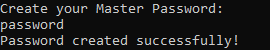

Твои пароли.
MyPassVault: Твоя цифровая крепость
MyPassVault - локальный менеджер паролей с открытым исходным кодом. Никаких серверов, никакой синхронизации, никаких подписок. Программа работает на твоём компьютере и хранит данные только в вашей папке.
- Полная автономность. Программа не делает ни одного сетевого запроса. Ваши пароли никогда не покинут пределы твоего жёсткого диска - ни в зашифрованном, ни в открытом виде.
-
Двойное шифрование. Каждая запись шифруется в два слоя:
сначала сдвиговым шифром с твоим личным ключом шифрования, затем
подстановочным шифром с фиксированной таблицей символов. Даже открыв
файл
passwords.txt, посторонний увидит лишь бессмысленный набор знаков. -
Зашифрованный журнал событий. Каждая попытка входа, смена
пароля, удаление записей - всё фиксируется в зашифрованном
log.txt. Ты всегда знаешь, что происходило с программой. - Умное управление записями. Автоматическая нумерация, удаление конкретной строки с пересчётом индексов, поиск по названию платформы, мгновенная очистка всей базы - всё через простые команды в терминале.
-
Портативность. Один
.exeфайл, менее 5 МБ. Не требует установки, не трогает реестр. Положи на флешку - работай на любом Windows-компьютере.
Почему стоит выбрать MyPassVault?
Безопасность
- Все данные хранятся локально в папке с программой. Интернет не используется.
- Пароли и логи шифруются на уровне символов и цифр - двумя независимыми алгоритмами.
- После двух неверных попыток входа программа автоматически удаляет файл с паролями - защита от подбора.
-
Невозможно восстановить: SHA-256 - однонаправленная
функция. Файл
main_password.txtсодержит лишь 64 шестнадцатеричных символа, из которых восстановить исходный пароль криптографически невозможно. - Приватность: Даже если кто-то получит доступ к файлам программы, он не сможет узнать твой мастер-ключ - хеш не раскрывает исходное значение.
-
Самоуничтожение при взломе: Только 2 попытки ввода
мастер-пароля. После второй ошибки программа удаляет
passwords.txtи завершает работу. Подменить файл хеша бесполезно - база уже уничтожена. -
Смена ключа без потери данных: Команда
keyперешифровывает всю базу на лету - расшифровывает старым ключом и немедленно шифрует новым. База всегда консистентна. -
Принцип «Ничего для врага»: Полная потеря данных
владельцем при наличии резервной копии - меньшее зло, чем
попадание всей базы паролей к злоумышленнику. Делай бэкапы
passwords.txtна флешку.
Мастер-пароль: защита SHA-256
Твой главный пароль никогда не хранится в открытом виде. При первом запуске программа вычисляет его SHA-256 хеш и сохраняет только его. При каждом входе введённый пароль хешируется заново и сравнивается с сохранённым значением.
Инструкция по использованию MyPassVault
Программа является переносной (Portable) и не требует установки.
Помести исполняемый файл в отдельную пустую папку - там же будут
созданы passwords.txt, main_password.txt и
log.txt.
-
Запусти файл программы. Если
main_password.txtотсутствует, программа предложит создать Мастер-пароль. - Придумай надёжный пароль. Он будет захеширован по SHA-256 и сохранён локально. Сам пароль нигде не хранится - запомни его.
- Программа автоматически создаст системные файлы в текущей папке и откроет командное меню.
Первый запуск

- При каждом входе вводи Мастер-пароль. Есть 2 попытки - после двух ошибок программа закроется и удалит базу паролей.
- После успешного входа программа запросит Encrypt Key - любое целое число, которое служит твоим личным ключом шифрования. Чем длиннее и случайнее число, тем лучше.
-
Важно: Encrypt Key нигде не сохраняется. Если ввести неверный
ключ, команда
showотобразит данные некорректно. Забудешь ключ - придётся сделатьreset.
Авторизация и Encrypt Key
Основные команды
show- Показать все сохранённые паролиfind- Найти пароль по названию платформыappend- Добавить новую запись-
delete- Удалить запись (нумерация пересчитается) clear- Удалить все пароли-
copy- Сохранить расшифрованную копию вpasswords_copy.txt -
key- Сменить ключ шифрования (база перешифруется автоматически) password- Сменить главный парольlogs- Показать журнал активностиclear-logs- Удалить все логиcommands- Показать меню команд-
reset- Полный сброс: удалить пароли, логи и мастер-пароль close- Выйти из программы
Записи
Безопасность и логи
Система

Системные требования
- ОС: 7 / 10 / 11 (x64)
- Процессор: Любой с поддержкой x64
- Место на диске: менее 5 МБ
- Интернет: Не требуется
Советы от разработчика
-
Не используй в качестве Encrypt Key год своего рождения,
0или другие очевидные числа. -
Регулярно делай резервную копию файла
passwords.txtна флешку. Файл зашифрован - хранить его в облаке тоже безопасно. -
После важной сессии используй
clear-logs, чтобы не оставлять следов активности. -
Не закрывай программу принудительно во время команды
key- перешифровка базы должна завершиться полностью.